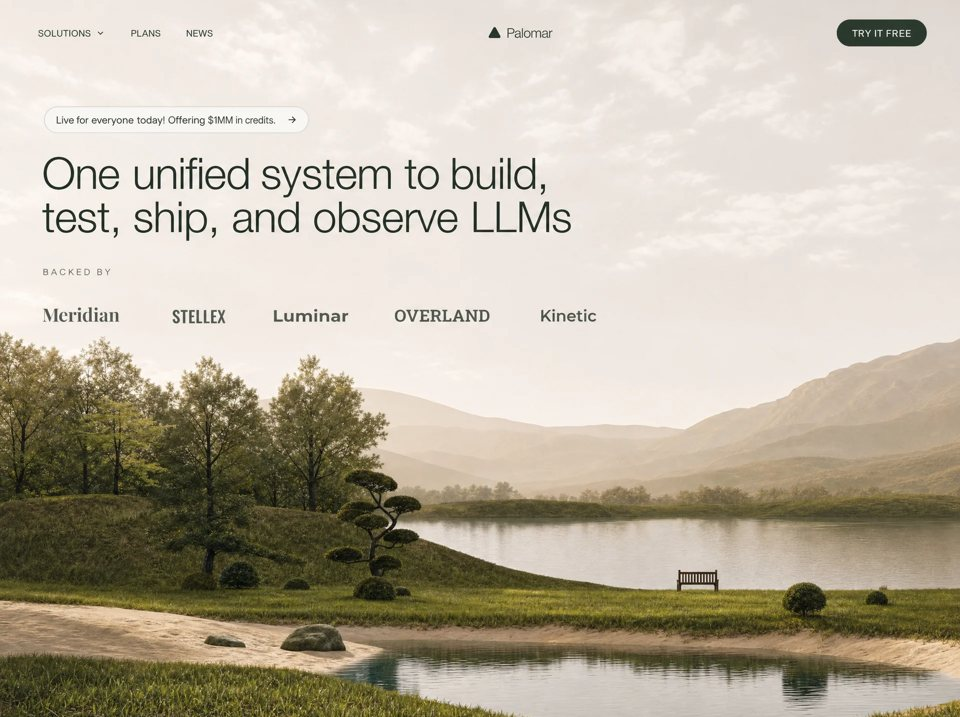

Palomar Labs
AIaiyilai-ai 公开页面
收录时间：2026-08-23正文：7,688 字符

本地预览图 · jpeg
完整提示词
Build a standalone pixel-accurate recreation of the Palomar Labs marketing landing page: fixed navbar + full-viewport video hero only. No other sections. Match this spec exactly. Do not invent extra copy, buttons, gradients, overlays, or decorative blobs.
Stack
React + TypeScript + Vite
Tailwind CSS
lucide-react icons: ChevronDown, ArrowRight, Triangle
Single App.tsx with Navbar, Hero, TrustedBy
Exact assets and URLs (do not change)
Background video (must be this exact CloudFront URL):
https://d8j0ntlcm91z4.cloudfront.net/user_38xzZboKViGWJOttwIXH07lWA1P/hf_20260820_010308_b1636845-4c15-4ab6-b0c9-9a29bfb0c6e3.mp4
Fonts in index.html:
<link href="https://db.onlinewebfonts.com/c/0e6de1ec911a2e267ff136bbdd384a44?family=Helvetica+Neue+Light" rel="stylesheet">
<link href="https://fonts.googleapis.com/css2?family=Playfair+Display:wght@700&family=Oswald:wght@500&family=Montserrat:wght@700&family=Roboto+Slab:wght@600&family=Raleway:wght@700&display=swap" rel="stylesheet">
Page title: Palomar - One Unified System for LLMs
Color tokens (Tailwind theme.extend.colors.brand)
dark: #2d3a2e
green: #3d5a3e
light: #f5f3ef
cream: #faf8f5
Font families (Tailwind theme.extend.fontFamily)
helvetica-neue: "Helvetica Neue Light", Helvetica, Arial, sans-serif
playfair: "Playfair Display", serif
oswald: "Oswald", sans-serif
montserrat: "Montserrat", sans-serif
roboto-slab: "Roboto Slab", serif
raleway: "Raleway", sans-serif
Body: font-family: 'Helvetica Neue Light', Helvetica, Arial, sans-serif; with antialiasing. Global * { margin:0; padding:0; box-sizing:border-box; }. html { scroll-behavior: smooth; }. Root app wrapper: font-helvetica-neue. Background of the hero section: bg-brand-cream (#faf8f5).
Animations (global CSS, exact)
@keyframes fade-up {
from { opacity: 0; transform: translateY(20px); }
to { opacity: 1; transform: translateY(0); }
}
@keyframes fade-down {
from { opacity: 0; transform: translateY(-12px); }
to { opacity: 1; transform: translateY(0); }
}
.animate-fade-up { animation: fade-up 0.8s cubic-bezier(0.16, 1, 0.3, 1) both; }
.animate-fade-down { animation: fade-down 0.7s cubic-bezier(0.16, 1, 0.3, 1) both; }
.stagger-1 { animation-delay: 0ms; }
.stagger-2 { animation-delay: 120ms; }
.stagger-3 { animation-delay: 240ms; }
.stagger-4 { animation-delay: 360ms; }
.stagger-5 { animation-delay: 480ms; }
.stagger-6 { animation-delay: 600ms; }
1) Navbar
Fixed top-0 left-0 right-0 z-50. Transition duration-300.
If window.scrollY > 20: bg-brand-cream/90 backdrop-blur-md shadow-sm
Else: bg-transparent
Inner container: max-w-7xl mx-auto px-6 lg:px-8. Bar: relative flex items-center h-16 md:h-20.
Desktop left links (hidden md:flex items-center gap-8, animate-fade-down stagger-1)
All: text-sm text-brand-dark tracking-wide uppercase hover:opacity-70 transition-opacity
Button: Solutions + ChevronDown w-3.5 h-3.5, flex items-center gap-1
Anchor: Plans
Anchor: News
Center logo (absolute centered)
absolute left-1/2 -translate-x-1/2 flex items-center gap-2 animate-fade-down stagger-2
Lucide Triangle: w-5 h-5 text-brand-dark fill-brand-dark
Text Palomar: text-xl text-brand-dark tracking-tight font-helvetica-neue
Desktop CTA (right)
hidden md:inline-flex items-center ml-auto px-5 py-2.5 bg-brand-dark text-white text-sm tracking-wide uppercase rounded-full hover:bg-brand-green transition-colors animate-fade-down stagger-3 Label: Try It Free
Mobile hamburger (md:hidden, ml-auto, z-50, w-10 h-10, aria-label="Toggle menu")
Two 2px bars (w-6 h-[2px] bg-brand-dark rounded) with transition-all duration-300 ease-[cubic-bezier(0.68,-0.6,0.32,1.6)]:
Top bar at top-[6px]. Open: rotate-45 translate-y-[5px]
Bottom bar at top-[13px]. Open: -rotate-45 When open, lock document.body.style.overflow = 'hidden'.
Mobile overlay (md:hidden)
fixed inset-0 bg-brand-cream z-40 Transition duration-500 ease-[cubic-bezier(0.22,1,0.36,1)]
Open: opacity-100 pointer-events-auto
Closed: opacity-0 pointer-events-none
Inner column: flex flex-col items-center justify-center h-full gap-8, same 500ms ease, delay-100
Open: translate-y-0 opacity-100
Closed: -translate-y-8 opacity-0
Links (each text-3xl text-brand-dark tracking-tight): Solutions, Plans, News CTA: mt-4 inline-flex items-center px-8 py-3.5 bg-brand-dark text-white text-lg tracking-wide rounded-full → Try It Free Clicking any item closes the menu.
No dropdown panel for Solutions — it is a button on desktop and a simple link on mobile.
2) Hero
section.relative.w-full.h-screen.min-h-[700px].overflow-hidden.bg-brand-cream
Video layer
div.absolute.inset-0 wrapping <video>:
src = the CloudFront URL above
autoPlay muted loop playsInline
class: w-full h-full object-cover object-bottom
No dark overlay, no gradient, no poster image
Content column (sits on top of video, left-aligned, not vertically centered)
relative z-10 flex flex-col items-start max-w-7xl mx-auto pt-28 md:pt-36 px-6 lg:px-8
Announcement pill
Anchor, inline-flex items-center gap-2 px-4 py-2 rounded-full border border-brand-dark/15 bg-white/60 backdrop-blur-sm hover:bg-white/80 transition-colors mb-5 md:mb-6 animate-fade-up stagger-3
Text text-sm text-brand-dark: Live for everyone today! Offering $1MM in credits.
ArrowRight w-3.5 h-3.5 text-brand-dark
Headline
h1 classes: text-left text-3xl sm:text-4xl md:text-5xl lg:text-6xl text-brand-dark leading-[1.05] tracking-tight max-w-4xl font-helvetica-neue animate-fade-up stagger-4
Exact copy with a line break only from sm and up:
One unified system to build,
test, ship, and observe LLMs
Implementation: first line, then <br className="hidden sm:block" />, then a space, then test, ship, and observe LLMs. On <640px it wraps naturally as one block.
No subtitle, no primary CTA in the hero body.
3) Trusted by (inside Hero, under headline)
Wrapper: w-full mt-8 md:mt-10 animate-fade-up stagger-5
Label: text-left text-xs tracking-[0.25em] uppercase text-brand-dark/50 mb-6 md:mb-8 font-helvetica-neue → Backed by
Logo row: flex flex-wrap items-center justify-start gap-6 md:gap-12 lg:gap-16 animate-fade-up stagger-6
Five wordmarks as text (not images), text-lg md:text-xl lg:text-2xl text-brand-dark/80 whitespace-nowrap:
Meridian — font-playfair (Playfair Display 700)
STELLEX — font-oswald uppercase (Oswald 500)
Luminar — font-montserrat (Montserrat 700)
OVERLAND — font-roboto-slab uppercase (Roboto Slab 600)
Kinetic — font-raleway (Raleway 700)
Responsive rules (must match)
< md (768px): hamburger + full-screen cream overlay; hide desktop links and CTA; nav height h-16; hero padding pt-28 px-6; logo gaps gap-6; headline text-3xl then sm:text-4xl
md+: three left links, centered logo, right pill CTA; nav h-20; hero pt-36; logo gaps md:gap-12
lg+: container px-8; headline lg:text-6xl; logo gaps lg:gap-16
Hero always h-screen with min-h-[700px]
Content always left-aligned (items-start, text-left, justify-start)
Video always object-cover object-bottom so the bottom of the footage stays framed
Visual character
Quiet, editorial, cream/forest. Light Helvetica Neue, not heavy Inter/SF. Centered triangle + Palomar wordmark. Frosted white pill over a full-bleed landscape video. Wordmark “logos” in mixed display fonts, not SVG brand files. Entrance: nav fades down (stagger 0 / 120 / 240ms); pill, headline, backed-by fade up (240 / 360 / 480 / 600ms).
Do not add
Footer, extra sections, search, language switcher, social icons, video controls, mute button, overlay scrim, second headline, hero “Get started” button, Solutions mega-menu content, or any other video URL.
Implement this as one working page that looks identical on desktop and mobile.把上面的提示词完整复制到支持长文本的 AI 工具中，再按需要替换品牌名、配色与文案。提示词描述的是整页结构与动效节奏，生成后建议在真实浏览器里检查首屏加载和移动端表现。
来源与版权
该条目来自公开提示词页面，原始出处信息未随页面提供。
提示词文本与预览素材的版权归原作者或原平台所有，本站仅作索引与归档。若你是权利人并希望移除本条内容，请通过联系方式告知。